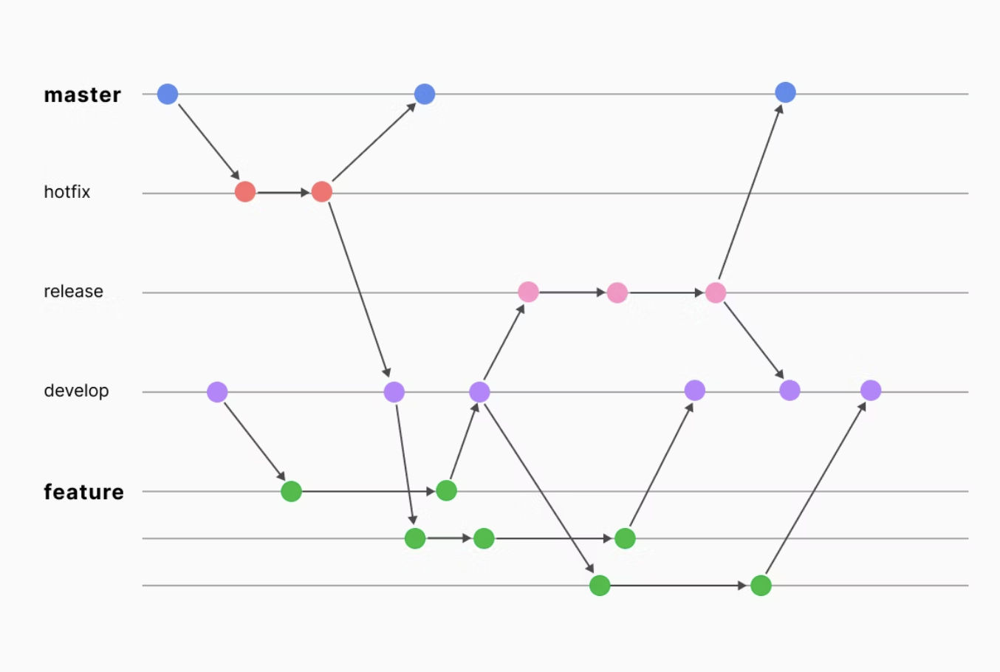
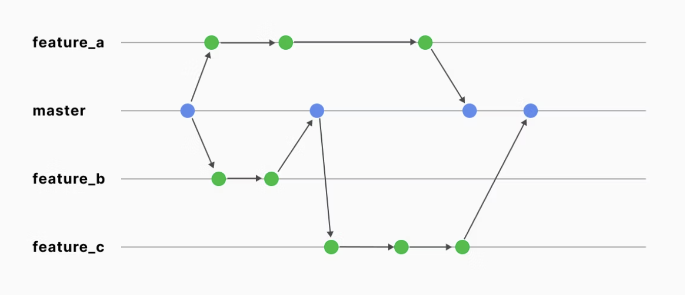

ブランチ戦略¶
ブランチ戦略とは、Gitのブランチをどういった方法で使用・管理するかの規約。 チームごとにローカライズされているが、以下の有名なブランチ戦略がベースになっていることが多い。
gitdevelop-flow¶
A successful Git branching model
2010年に提唱された有名なブランチ戦略。
ブランチ名 |
特徴 |
|---|---|
main |
本番環境にリリースされた安定したコードを保持するブランチ。常にデプロイ可能な状態が維持される。 |
develop |
次のリリースのために開発中のコードを集約するブランチ。開発の中心となるブランチで、開発中の機能が統合される。 |
release |
リリース準備を行うブランチ。developから分岐し、リリース直前のバグ修正や調整を行う。リリースが完了するとmainにマージされ、リリースバージョンのタグが付けられる。 |
hotfix |
本番環境で緊急修正が必要な場合に使用するブランチ。mainから直接分岐し、修正後はmainとdevelopの両方にマージされる。 |
feature |
新機能や改修を開発するための個別ブランチ。developから分岐し、作業完了後はdevelopにマージされる。多数のfeatureブランチが同時に進行することができる。 |
上記のブランチを利用して開発を行うが、基本的な開発はfeatureを軸に進めていく。 featureが長期にわたって利用されることを想定されており、近年のリリースの高速化に伴った開発は想定されていないと提唱者が発信している。
 代表的なブランチ戦略の特徴とメリット・デメリットを理解する
デメリット¶
hotfixやreleaseブランチの存在はブランチ管理を煩雑にさせる。
github-flow¶
mainブランチとfeatureブランチのみで運用していく非常にシンプルなブランチ戦略 featureブランチの小まめなマージにより、コンフリクトを小さくすることができる。
 代表的なブランチ戦略の特徴とメリット・デメリットを理解する
デメリット¶
ブランチ自体が非常にシンプルなため、リリース管理機能など別途必要になる。
gitlab-flow¶
Combine GitLab Flow and GitLab Duo for a workflow powerhouse
git-flowよりもシンプルにしつつ、github-flowほどシンプルにはしていないブランチ戦略。 ブランチとしては以下のブランチを運用する。
ブランチ名 |
特徴 |
|---|---|
main/production |
本番環境にデプロイされる安定したコードを保持するブランチ。常にデプロイ可能な状態を維持。 |
master |
一部のワークフローでmainの代わりに使用されるブランチ。本番環境にリリースされるコードを保持。 |
environment branches |
各環境（例：staging、testing）に対するブランチ。環境ごとのデプロイ可能なコードを管理。 |
topic branches |
特定の機能やバグ修正のために作成される短期的なブランチ。作業が完了するとmainやenvironmentブランチにマージ。 |
トランクベース開発¶
トランクブランチをなるべく短命にして、mainのブランチにどんどんマージしていく開発 CICDとセットで、長く生きる開発ブランチを認めない。
トランクベース開発以外の戦略は長いfeatureブランチが発生することになる。 この長生きのfeatureがいる限り、潜在的にリファクタリングを嫌うようになる。 これはリファクタリングをすると全体的にコンフリクトが発生することが増えるからである。 結果として技術的負債が溜まってしまうという課題意識から生まれたgit-flowである。